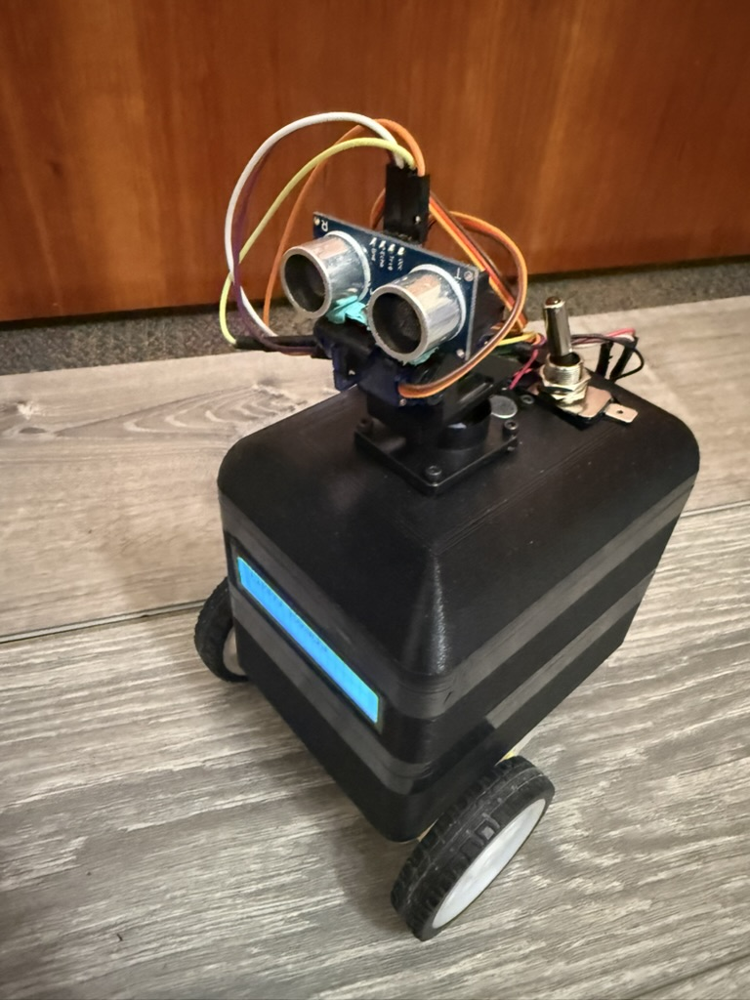
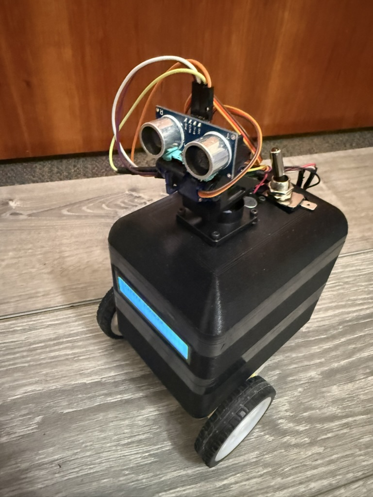

Introduction
CodeBuddy Timmy is a Bluetooth-enabled educational robot that teaches robotics and programming through interactive play.
CodeBuddy Timmy is an interactive mobile robot designed to introduce students to core ideas in programming, embedded systems, and robotics. It brings together motors, sensors, a display, and sound into a friendly platform that responds in real time to both user input and its surroundings. Through a custom Bluetooth mobile app, users can wirelessly connect to Timmy to control how it moves, behaves, and switches between operating modes. Instead of acting like a simple remote-controlled toy, Timmy encourages hands-on exploration by letting users program behaviors and immediately see how their code affects the robot's motion and sensor responses.
The goal of this project is to make robotics more accessible to young learners by demonstrating how simple hardware and thoughtful software can create engaging educational robots.
High Level Design
Project Rationale and Inspiration
CodeBuddy Timmy was inspired by educational robots like Dash, which show how movement, sound, and interaction can make robotics engaging for beginners. Many of these commercial robots, however, rely on proprietary hardware and software that hide how the system actually works. The goal of this project was to build a similar interactive experience using inexpensive, student-built hardware while keeping the design transparent and easy to understand. By doing so, the robot makes it clear how sensor data, control logic, and motor outputs work together to produce behavior.
Logical Structure
Timmy is built around a microcontroller that continuously reads sensor inputs, processes user commands, and drives the robot's actuators. Sensors provide information about the robot's environment, while outputs include DC motors, servos, an LCD, LEDs, and a buzzer. A Bluetooth connection links the robot to a custom mobile app, which serves as the primary user interface and enables wireless control in real time. In addition to direct manual control, the mobile app includes a programming mode that allows users to construct simple programs using visual coding blocks. Through this interface, young learners and other users can create loops, sequences, and conditional behaviors that iterate through different motions, sounds, and sensing actions. This feature bridges the gap between immediate interaction and structured programming, allowing users to experiment with control logic and observe how software decisions translate into physical robot behavior.
The design of CodeBuddy Timmy focused on keeping the hardware simple while allowing flexibility in software. Implementing behavior logic in software allowed modes to be easily modified and extended as the project evolved. Bluetooth was used instead of a wired interface to improve usability and engagement. These tradeoffs were made to favor transparency and ease of learning over maximum performance.
Although our robot draws inspiration from existing educational robots, it does not replicate any proprietary hardware or software. We developed all system architecture, code, and mechanical designs specifically for this project using publicly available interfaces. The project is intended as an educational prototype and learning tool, not a commercial product.
No known patents, copyrights, or trademarks are directly applicable to this project, as all hardware designs and software were developed independently using publicly available components and reference materials for educational purposes.
Hardware Design
Chassis Design
We modeled the robot chassis in Onshape and fabricated it using 3D printing. It is designed as a three-layer three-layer stacked structure with press fit, allowing the parts to align securely while still being easily separated by subsystem. This mechanical separation directly mirrors the electrical architecture, physically isolating motor hardware from sensitive control and sensing components. As a result, the design improves modularity, reduces electrical noise coupling, and simplifies modification and troubleshooting.
The bottom layer serves as the power and drive compartment. It has a custom-assembled dual-channel motor driver, a passive buzzer, and two battery packs for motor power. The bottom has openings for tabs that hold the two DC gear motors and wheels in place. This layer includes vertical wire pass-throughs that route motor control signals and power upward to the control electronics in the middle layer and to the DC motors themselves.
The middle layer has the control electronics and user-facing interfaces. A solderboard mounted in this layer supports the Raspberry Pi Pico and a BOOTSEL push button for programming and reset access. Another dedicated battery pack powers the Pico and all low-power peripherals in this layer. It also has a front-facing LCD display, making the robot's name, operating mode, and obstacle detection status visible.
The top layer is a domed lid. At the center of the dome is a pan-tilt servo assembly that holds the ultrasonic distance sensor, allowing it to actively scan the environment. A microphone module is mounted near the top of the robot to improve acoustic sensitivity while reducing the effects of mechanical vibration from the motors and drivetrain.
Electrical Isolation
The robot uses fully isolated power sources for the motors and logic electronics. Two battery packs located in the bottom layer supply power exclusively to the motor driver and DC motors. A completely separate battery pack in the middle layer powers the Raspberry Pi Pico and all low-power peripherals. The motor power system and the microcontroller power system do not share a common ground. This design choice was intentional and motivated by reliability, noise immunity, and safety considerations discussed in lecture. DC motors are electrically noisy loads. During startup, rapid speed changes, or stall conditions, they draw large transient currents and generate significant electrical noise and back-EMF. If motor and logic circuits share a ground reference, these disturbances can couple into sensitive electronics and cause unstable sensor readings, timing errors, communication issues, or unexpected resets.
Raspberry Pi Pico
The Raspberry Pi Pico serves as the central controller for the system. Since the Pico is the platform we have been working with throughout the course, it was the natural choice for implementing a project of this size and complexity. In this project, the Pico provides the GPIO, hardware PWM, ADC inputs, and I2C communication needed to interface with the robot's motors, sensors, and user interfaces.
Motor Driver and Motor

The two DC gear motors are used for differential drive system, which allows the robot to move forward and backward, turn by running the wheels at different speeds, and rotate in place. Each motor is mounted to the bottom layer of the chassis using integrated 3D-printed tabs that hold the motor body securely and keep the shafts aligned with the wheels. This prevents the motors from shifting or twisting under load and ensures consistent, repeatable motion. Overall, the differential drive setup provides good maneuverability while staying mechanically simple and easy to control in software.
Motor control is implemented using a custom-built driver based on the L293D dual H-bridge motor driver IC. The Raspberry Pi Pico provides digital direction signals and PWM enable signals to the L293D, allowing independent control of motor direction and speed.
Early in development, the project aimed to include a self-balancing feature, which required precise, low-noise sensor measurements and tightly coupled motor control. During testing, the DC motors generated significant electrical noise and voltage spikes, especially during startup and rapid speed changes. When motor and logic electronics shared ground, this noise caused i2c to stall and the motors to run all full speed. To address this, optoisolators were added to the motor control signal paths, and the motor power system was kept electrically isolated from the logic power system using separate battery packs.
Audio Feedback
A passive piezoelectric buzzer is mounted in the bottom compartment and aligned with acoustic openings in the chassis. Unlike an active buzzer, it is driven directly by the Pico, which outputs square-wave signals at specific frequencies and durations using PWM. These signals cause the piezo element to vibrate, producing tones that indicate startup, mode changes, obstacle detection, and internal "thinking" states. Placing the buzzer in the bottom layer keeps wiring short while still allowing sound to propagate clearly through the enclosure.
Ultrasonic Sensor with Pan-Tilt Actuation
Obstacle detection is handled by an HC-SR04 ultrasonic distance sensor mounted on a two-axis pan-tilt mechanism at the top of the robot. The Pico initiates a measurement by sending a 10 microsecond pulse on the trigger pin, causing the sensor to emit an ultrasonic signal. The echo pin then remains high for the time it takes the sound to travel to an object and reflect back. By measuring this duration and using the known speed of sound, the Pico calculates the distance to nearby obstacles.
The pan and tilt motion is controlled by two SG90 servo motors. The servos use a small DC motor, gearbox, feedback potentiometer, and control electronics to hold the shaft at the desired position. This setup allows the robot to actively scan its surroundings both horizontally and vertically, improving obstacle detection while also giving the robot more expressive, lifelike motion.
Microphone Module
A microphone module is mounted near the top of the robot. The module uses an electret microphone and onboard amplifier to produce an analog voltage proportional to sound amplitude, which is sampled by the Pico's ADC.
Software Design
Overall Architecture
The robot's firmware is written in C using the Raspberry Pi Pico SDK and uses protothreads to manage sensing, control, communication, and user feedback concurrently. This cooperative multitasking approach keeps the system responsive by preventing any single task from blocking sensor updates or user commands.
At a high level, the firmware is organized into the following components:
- Behavior and mode logic
- Motor and servo control
- Sensor acquisition - ultrasonic and microphone
- User feedback - LCD and buzzer
- BLE communication and command handling
Mode Control and State Machine
Robot behavior is implemented as a finite state machine. The system supports four operating modes:
- CONTROL: allows direct manual control of motor speed and direction via BLE commands from the mobile app, and also supports execution of user-defined block-based programs that sequence motions, sounds, and sensing actions
- PATROL: autonomously drives forward while using ultrasonic distance measurements to detect obstacles, back up, and turn to avoid collisions
- FOLLOW: continuously adjusts motor speed to maintain a target distance from an object using real-time ultrasonic feedback
- DANCE: executes a predefined sequence of coordinated motor motion, servo movement, LED patterns, and sound output
Mode changes are triggered either by BLE commands from the mobile app or by events detected by the microphone. To avoid rapid/accidental switching, a short timing guard enforces a minimum delay between transitions, which is especially important for audio triggers where background noise or repeated claps could cause unstable behavior. When a mode change occurs, the robot first stops its motors, plays an audible cue, and updates the LCD display. These actions make transitions clear to the user while keeping behavior predictable and safe.
Patrol mode implements reactive autonomous navigation using continuous distance sensing. The robot drives forward while monitoring for obstacles and, when one is detected, stops, backs up, and scans left and right using the pan servo. It then turns toward the direction with greater clearance and continues until a clear path is found, allowing reliable obstacle avoidance with simple threshold-based logic.
Patrol Mode Pseudocode
void mode_patrol(distance_cm)
{
if (distance is invalid)
assume path is clear
if (distance > CLEAR_THRESHOLD) {
occasionally:
stop
scan left and right with servo
move forward
return
}
// obstacle detected
stop motors
signal obstacle (LED + sound)
back up briefly
scan left distance
scan right distance
if (left side is clearer)
turn left
else
turn right
continue turning until path is clear
stop motors
}
Follow mode maintains a desired distance from an object using threshold control. The ultrasonic sensor remains centered, and the robot moves forward, backward, or stops depending on whether the detected distance is too far, too close, or within an acceptable range. This produces stable and predictable following behavior without complex control algorithms.
Follow Mode Pseudocode
void mode_follow(distance_cm)
{
center sensor head
if (distance is invalid)
stop motors
return
if (distance > TOO_FAR)
move forward
else if (distance < TOO_CLOSE)
move backward
else
stop motors
}
Background Math Used in Control and Sensing
The robot's sensing and control behaviors rely on a small number of simple numerical relationships. These equations were chosen to be computationally inexpensive while still providing reliable, real-time behavior on the Raspberry Pi Pico.
Ultrasonic Distance Measurement
Distance is computed from the HC-SR04 echo pulse width using time-of-flight:
d = (v · t) / 2
where t is the measured echo pulse duration and v is the speed of sound in air (approximately 343 m/s at room temperature). The division by two accounts for the round-trip travel of the ultrasonic pulse.
DC Motor Speed Control.
Motor speed is controlled using pulse-width modulation (PWM). The effective motor voltage
is proportional to the PWM duty cycle:
Veff ∝ D
where D is the duty cycle between 0 and 1. Empirical testing showed that duty cycles below a minimum threshold could not overcome static friction, so software limits were applied to ensure smooth and predictable motion.
Servo Angle Mapping
Standard hobby servos interpret pulse widths between approximately 1 ms and 2 ms at a
50 Hz update rate as angular positions from 0° to 180°. A linear mapping is used:
pulse = min + (θ / 180) · (max - min)
where θ is the desired servo angle. PWM updates are synchronized to the PWM cycle to reduce jitter and produce smooth pan and tilt motion.
Actuation
Motor Control
Motor control is handled through a small set of helper functions (motors_forward, motors_backward, motors_turn_left, motors_turn_right, and motors_stop) that encapsulate the required GPIO operations. These functions control the direction and enable pins connected to the motor driver, allowing higher-level behavior code to request motion without directly manipulating individual pins. This approach simplifies the autonomy logic while maintaining consistent behavior across manual and autonomous operation. In CONTROL mode, BLE commands map directly to these motion primitives, while in autonomous modes the same primitives are called by the patrol, follow, or dance logic.
Servo Control
Two SG90 servo motors provide pan and tilt motion for the ultrasonic sensor. Both servos are driven using the Pico's hardware PWM, with separate channels used for pan and tilt at a 50 Hz update rate appropriate for standard hobby servos. Servo position is set by adjusting the pulse width, with a linear mapping converting angles from 0 to 180 degrees into the corresponding control signals. PWM updates are applied at the end of each PWM cycle rather than directly in the main control loop, which reduces jitter and results in smoother, more stable motion. The tilt servo mapping is inverted in software to match its physical mounting orientation, ensuring that commanded angles correspond intuitively to the sensor's actual movement.
Sensors
Distance Measurement
The robot uses an HC-SR04 ultrasonic sensor to measure distance and detect obstacles. To take a measurement, the software sends a 10 µs trigger pulse and then measures how long the echo signal remains high, corresponding to the time it takes for the ultrasonic pulse to travel to an object and return. This pulse width is converted into a distance using the speed of sound, with a timeout included to prevent the system from blocking if no echo is received. Distance readings are interpreted based on the current operating mode: in PATROL mode, distances below a set threshold trigger obstacle avoidance, while in FOLLOW mode, upper and lower bounds are used to regulate forward and backward motion.
Audio Detection
Audio input is handled by sampling the microphone's amplified analog signal with the Pico's ADC. Instead of performing frequency analysis, the firmware uses amplitude-based detection. It classifies short, high-amplitude transients as claps and sustained high levels as music. This approach is sufficient for the intended interactions and avoids unnecessary computational overhead. Microphone processing runs in its own protothread, allowing continuous monitoring without interfering with motion control or BLE communication, and can be enabled or disabled through BLE commands as needed.
User Interface Outputs
Audio Feedback
Audio feedback is produced using a passive piezo buzzer driven by PWM. The buzzer control code configures the PWM output to generate the desired frequency and enables it only for the duration of the sound, preventing unintended noise. More complex effects, such as startup chimes, obstacle alerts, and dance sounds, are created by sequencing tones.
LCD Display over I2C
The robot uses a 16x2 character LCD with an I2C backpack to minimize GPIO usage. The display is controlled through the Pico's hardware I2C interface, with the backpack's I/O expander handling the LCD's control and data signals. During startup, the firmware initializes the LCD in 4-bit, two-line mode, after which characters are sent over I2C as needed. The LCD displays the robot's name on startup and updates dynamically during operation to show the current mode, providing clear user feedback without requiring a serial connection.
Bluetooth Low Energy (BLE) Communication
BLE communication is implemented using BTstack on the Pico W. A custom service and writable characteristic are defined, and incoming commands are handled in an attribute write callback. Commands are ASCII characters which minimizes parsing complexity and latency. Software checks enforce safety constraints: manual motion and servo commands are only honored in CONTROL mode, while a stop command is always accepted. This prevents conflicts between autonomous behaviors and user control.
Mobile Bluetooth App Interface
User interaction with CodeBuddy Timmy is handled through a custom iOS Bluetooth Low Energy (BLE) application written in SwiftUI. The app serves purely as a user interface and does not perform any autonomous decision-making. All sensing, timing-critical logic, and safety enforcement remain on the Raspberry Pi Pico. This design ensures that robot behavior is consistent and predictable regardless of mobile device performance.
The main control screen provides real-time feedback and interaction tools. A connection status indicator shows whether the robot is currently connected, allowing users to immediately see when the system is ready. Mode selection buttons allow users to switch between CONTROL, PATROL, FOLLOW, and DANCE modes, with each mode mapped to a single ASCII BLE command that directly matches the firmware state machine.
Manual motion control is provided through a press-and-hold directional pad. When a direction button is pressed, the corresponding movement command is sent continuously. When the button is released, a stop command is automatically transmitted, ensuring the robot never continues moving unintentionally. This interaction style significantly improves safety and makes the robot intuitive to operate for new users.
Servo control is handled using a two-dimensional touch pad that maps finger position to pan and tilt angles for the ultrasonic sensor head. The app converts touch coordinates into angles between 0 and 180 degrees and sends these values to the robot in real time. The current pan and tilt angles are also displayed numerically to provide clear feedback to the user.
In addition to direct control, the app includes a programming mode that allows users to construct simple programs using block-style commands. Supported blocks include timed and continuous motor movements, servo positioning, wait delays, variable assignment and modification, and structured control flow such as loops and conditional statements. When a program is run, the app executes blocks sequentially, highlighting the currently active block in the interface. Loops and conditional logic are handled internally by the app, while each resulting action is transmitted to the robot as standard BLE commands.
Throughout program execution, safety is maintained by enforcing a final stop command when the program ends or if the BLE connection is lost. Controls are disabled when the robot is disconnected to prevent unintended command transmission. This combination of simple communication, visual feedback, and built-in safeguards makes the mobile app effective both as a control interface and as an educational programming tool.
Approaches Explored but Not Pursued
Early in the mechanical design process, we explored whether self-balancing could be incorporated into the robot by adjusting wheel placement and adding inertial sensing. A gyroscope was connected and basic sensor readout was tested to better understand what would be required for balance control. This exploration influenced several early design decisions, including how the wheels were positioned and how electrical noise from the motors could affect sensitive sensors. However, as development progressed, it was clear that reliable self-balancing would require a significantly different mechanical structure and control strategy. The robot's compact, low-profile chassis (though chosen intentially to make it stable, safe, and approachable for young users) resulted in a low center of mass and limited vertical leverage. Both of these make dynamic balancing difficult. Self-balancing was set aside in favor of a grounded, stable design that better supports modular behaviors, simple control logic, and consistent performance.
Code Reuse and AI Assistance
Several parts of the software build on existing reference material:
- The protothreads framework is provided through Cornell course materials.
- Servo PWM configuration follows the structure demonstrated in Hunter Adams' PWM examples.
- BLE initialization and GATT server setup are adapted from Hunter Adams' Pico W Bluetooth examples.
- Ultrasonic distance measurement follows standard HC-SR04 trigger and echo timing patterns, informed by publicly available Arduino reference implementations.
- DC motor control logic is based on common Raspberry Pi Pico motor-driving approaches, adapted from online tutorials and modified for this project's hardware and firmware structure.
Any code that was generated or assisted by AI tools is explicitly identified in the source code using comments. These sections were used only as an initial reference and were then reviewed, tested on hardware, and modified to match the project's specific wiring, timing requirements, and safety constraints. Certain block diagrams and illustrative graphics in this report were generated using AI-based tools to aid visualization. We performed all final system integration, parameter tuning, and behavior design.
Results
Project Demonstration Video
Functional Testing and Measured Performance
System performance was validated through iterative functional testing, with each hardware component first tested in isolation using simple test code before being integrated into the full system. After each integration step, the robot's real-world behavior was observed and verified.
The ultrasonic sensor produced repeatable distance measurements within a few centimeters for ranges below ~50 cm, which was sufficient for obstacle avoidance. Invalid readings at extreme angles or soft surfaces were handled safely in software. Servo pan and tilt commands resulted in consistent, repeatable positioning. Motor PWM limits were chosen to overcome static friction while maintaining smooth, controlled motion.
Measured Performance
The table below summarizes measurements collected during system testing.
| Subsystem | Test Condition | Expected Behavior | Measured Result |
|---|---|---|---|
| Ultrasonic distance sensing | Flat object placed at different distances | Detect obstacle within threshold and report consistent distance | Distance readings within 5 cm of expected |
| Ultrasonic distance sensing | No object in range | Timeout or invalid reading handled safely | Timeout detected; treated as "no obstacle" or motors stopped |
| Servo pan positioning | Command = 90° (center) | Repeatable centering | ~2-3° repeatability by visual alignment |
| Servo sweep time | 0° to 180° pan sweep | Smooth continuous motion | ~0.5 s sweep time (no noticeable jitter) |
| Mode transition guard | Repeated mode-change triggers | Prevent rapid/accidental switching | ~500 ms minimum transition spacing enforced |
| LCD update responsiveness | Mode change | Display updates quickly without flicker | <50 ms perceived; no visible flicker during operation |
Note: Timing values were measured using observable response timing (phone stopwatch/video review) rather than oscilloscope instrumentation.
Responsiveness and Concurrent Operation
The robot exhibited responsive, real-time behavior with no noticeable hesitation or display flicker during operation. Obstacle detection, motor control, servo motion, Bluetooth communication, and LCD updates ran concurrently without blocking. This was enabled by cooperative multitasking using protothreads, where each task executes briefly and yields explicitly. This design prevented any single task from blocking execution, so the system could remain responsive during operation. Visual feedback updated smoothly with no noticeable lag, demonstrating reliable performance on a single-core microcontroller.
Accuracy of Sensing and Control
Sensor readings and actuator responses were validated through real-world testing to ensure sufficient accuracy for the intended behaviors. Distance measurements, servo positioning, motor control, and event detection were all verified in physical operation rather than relying solely on theoretical values. While absolute precision was not the primary goal, all sensing and control outputs were accurate and repeatable enough to support reliable obstacle avoidance, navigation, and user interaction.
Safety Considerations
Safety was addressed through both hardware and software design. The robot operates at low voltage from a battery supply, eliminating electrical shock hazards. Motor speeds were limited in software to prevent excessive or unsafe motion. Fail-safe behaviors were built into the control logic: invalid sensor readings immediately stopped the motors, and Bluetooth disconnects or invalid commands caused the system to enter a safe idle state.
Physically, the robot is lightweight with a compact chassis and rounded edges, reducing risk during contact. All wiring and electrical connections were insulated and secured to prevent accidental shorts during operation.
Usability and User Interaction
The robot was designed to be usable by both the developers and non-technical users. Operating modes are clearly differentiated through behavior, The robot was designed to be intuitive for both developers and non-technical users. Operating modes are clearly communicated through motion, LED patterns, sound cues, and LCD messages, allowing users to understand the robot’s state without external debugging tools. Bluetooth control enables simple interaction from a smartphone, eliminating the need to reprogram the device to change behavior. Users can easily switch between manual and autonomous modes, making the robot well suited for demonstrations and educational use.
Conclusions
CodeBuddy Timmy successfully demonstrates that an engaging and educational robot can be built using relatively simple hardware combined with carefully structured software. The project met its primary goals of enabling interactive control, autonomous behavior, and beginner-friendly programming while remaining safe, robust, and approachable for new users. Through the integration of motors, sensors, audio feedback, a display, and Bluetooth communication, the robot provides a clear and tangible connection between software decisions and physical behavior.
From a technical perspective, the project reinforced the importance of system-level design tradeoffs. Early goals such as self-balancing highlighted the challenges posed by electrical noise, timing sensitivity, and mechanical constraints. Although this feature was ultimately set aside, the exploration led to improved power isolation and signal integrity in the final design. Separating motor and logic power domains, adding optoisolation, and enforcing software safety checks resulted in a system that operates reliably across all supported modes.
The mobile Bluetooth app played a key role in achieving the project's educational objectives. By providing both real-time manual control and a block-based programming interface, the app allows users to experiment with sequencing, loops, and conditional logic without modifying firmware. Keeping all autonomous decision-making on the robot ensured consistent behavior and reduced dependence on mobile device performance.
All code and hardware designs were developed specifically for this project or adapted from publicly available examples and course materials. No proprietary designs were reverse-engineered, and no non-disclosure agreements were required. While the robot is not intended as a commercial product, the modular architecture and software structure could support future extensions such as additional sensors, richer programming constructs, or more advanced autonomy. Overall, CodeBuddy Timmy provides a strong foundation for further exploration in embedded systems and educational robotics.
Appendix
Appendix A: Permissions
The group approves this report for inclusion on the course website.
The group approves the video for inclusion on the course YouTube channel.
Appendix B: Project Code
Appendix C: Work Distribution
Work on the project was shared across hardware, software, and documentation. Madelin focused on the 3D chassis design, implementing and integrating the robot's behaviors in code, and testing individual components before full system integration. Junwoo handled the motor driver design, wiring and soldering, and development of the Bluetooth mobile app used to control the robot. The website and final report were completed jointly, with sections divided between both team members.
References
Datasheets and Vendor Sites
- Raspberry Pi Pico W Datasheet
- Servo Motor SG90 Datasheet
- Ultrasonic Ranging Module HC-SR04 Datasheet
- Thin White Wheel for TT DC Gearbox Motors - 65mm Diameter
- DC 3V-6V Dual Axis Gear Motor TT Motor
- Microphone MAX4466 Datasheet
- LCD Screen with I2C Backpack